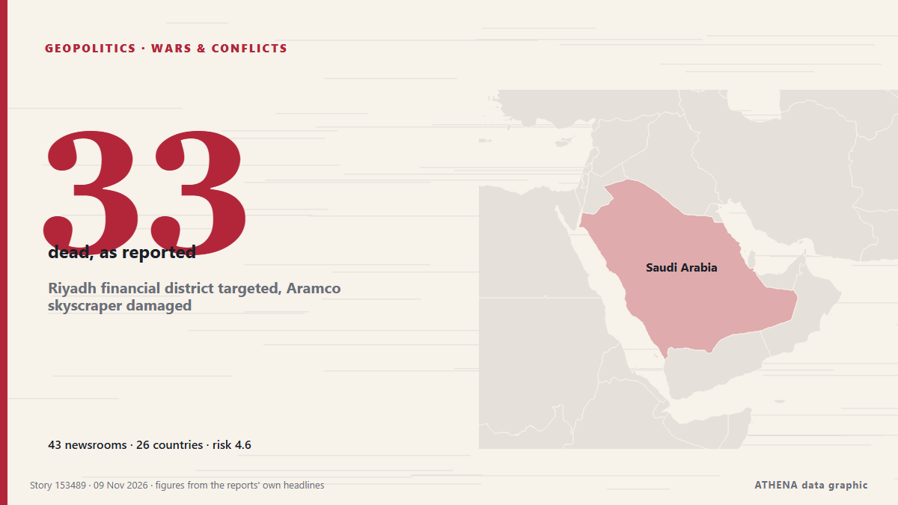

Riyadh financial district targeted, Aramco skyscraper damaged

An Aramco building in Riyadh was targeted in an "attempted attack", the Saudi energy ministry said on Sunday, with eyewitnesses telling AFP the skyscraper sustained damage, after the Saudi-led… from Al-Monitor
Reported independently by 48 outlets in 27 countries since 7 Nov, first by APA (English); coverage is fading. ATHENA rates the risk elevated (4.2/10), driven mainly by the severity of the harm described and its geographic and sector reach. Confidence is 88% (high), with 48 independent outlets corroborating it and an average source reliability of 76%. Outlets by country: United Arab Emirates (4), United States (4), Russia (3). Coverage: 7 Nov to 8 Nov, 20 hours.
Why it matters: The Red Sea and the Bab el-Mandeb strait form the shortest sea route between Asia and Europe, through the Suez Canal. Attacks on merchant ships push carriers to sail around Africa, adding time and cost to world trade.
What changed: 5 new reports from 5 outlets in the 24 hours to 10 Nov.
First reported as: Houthis claim strikes on Riyadh airport, Saudi Aramco facilities
How to read this page
- What you are reading
- 48 outlets in 27 countries reported this event. The reports below are listed in the order they appeared; each headline opens the original article. ATHENA writes none of the reports.
- Our reading
- For the record — The reports describe a completed, domestic, commercial or personal matter. We list it so you can see who reported it and when. We are not tracking a risk of wider conflict here.
- How much evidence
- Strong Many independent outlets in many countries describe the same event.
After repeats, off-topic items and stale reports are removed, 25 of the 39 listed reports are counted; 95% of the headlines match the event.
- What this does not mean
- ATHENA measures how an event is reported, not whether it is true. This is not a forecast, a judgement on who is right, or advice.
- What would change it
- Reports from other independent outlets showing a different development, or a firm confirmation or denial from an official source.
Reading R2 · refreshed with every update of this page. ATHENA has not yet published a track record for these readings; when it does, it will be linked here.
At a glance
Selected, scored and written by ATHENA's published methodology. No editor intervenes in individual events. How this is produced ›
| 07 Nov 17:00 UTC | 3 |
|---|---|
| 07 Nov 20:00 UTC | 1 |
| 07 Nov 23:00 UTC | 0 |
| 08 Nov 02:00 UTC | 3 |
| 08 Nov 05:00 UTC | 3 |
| 08 Nov 08:00 UTC | 24 |
| 08 Nov 11:00 UTC | 8 |
| 08 Nov 14:00 UTC | 7 |
| 08 Nov 17:00 UTC | 2 |
| 08 Nov 20:00 UTC | 3 |
| 08 Nov 23:00 UTC | 3 |
| 09 Nov 02:00 UTC | 2 |
| 09 Nov 05:00 UTC | 2 |
| 09 Nov 08:00 UTC | 2 |
| 09 Nov 11:00 UTC | 1 |
| 09 Nov 14:00 UTC | 0 |
| 09 Nov 17:00 UTC | 0 |
| 09 Nov 20:00 UTC | 0 |
| 09 Nov 23:00 UTC | 0 |
| 10 Nov 02:00 UTC | 0 |
| 10 Nov 05:00 UTC | 1 |
| 07 Nov 19:59 UTC | 0.0 |
|---|---|
| 07 Nov 21:46 UTC | 2.1 |
| 08 Nov 07:47 UTC | 3.9 |
| 08 Nov 07:58 UTC | 4.6 |
| 08 Nov 08:48 UTC | 5.6 |
| 08 Nov 11:14 UTC | 6.1 |
| 08 Nov 13:09 UTC | 5.0 |
| 08 Nov 14:38 UTC | 5.9 |
| 08 Nov 14:55 UTC | 5.2 |
| 08 Nov 15:21 UTC | 5.8 |
| 08 Nov 15:38 UTC | 5.3 |
| 08 Nov 17:54 UTC | 4.7 |
| 10 Nov 05:42 UTC | 4.2 |
Why these numbers
Importance
Risk
Confidence
The reporting — who reported it, and when
headline as published · opens the original- APA (English) · AzerbaijanYemen’s Houthis say they attacked Riyadh airport, Aramco oil sites and Saudi troops
- TASS (English) · RussiaHouthis claim strikes on Riyadh airport, Saudi Aramco facilities
- The Business Standard (Bangladesh) (working feed) · BangladeshHouthis claim attacks on Riyadh airport, Aramco facilities, Saudi troops in Najran
- Middle East Eye · INTSaudi Arabia lifts alert in Jazan, home to Aramco refinery targeted by Houthis
- The National · United Arab EmiratesMiddle East latest: Trump plays down prospect of new strikes on Iran
- Oman Observer · OmanRiyadh financial district targeted, Aramco building damaged
- Oman Observer · OmanRiyadh financial district targeted, Aramco tower damaged: witnesses
- Nile Post · UgandaHouthis say at least 33 killed in Saudi air strike
- Times of India · IndiaHouthi attacks target Aramco facilities in Saudi Arabia as explosions rock Riyadh
- Kurdistan24 (English) · IraqHouthi Missile Attack Targets King Abdullah Financial District
- Arab Times · KuwaitProjectile Damages Tower in Riyadh Financial District Amid Missile Attacks
- France 24 English · FranceYemen's Houthis claim attack on Aramco skyscraper in Riyadh
- Türkiye Today · TurkeyAramco tower in Riyadh financial district damaged as Houthi missiles fly
- New Straits Times · MalaysiaRiyadh financial district targeted, Aramco tower damaged
- Free Malaysia Today · MalaysiaRiyadh financial district targeted, Aramco tower damaged
- Al-Monitor · United StatesRiyadh financial district targeted, Aramco skyscraper damaged
- Al-Monitor · United StatesHouthis claim attack on Riyadh financial district, Aramco tower damaged
- The Straits Times · SingaporeRiyadh financial district targeted, Aramco tower damaged: Witnesses
- TASS (English) · RussiaHigh-rise building in Riyadh’s financial district damaged by projectile — Reuters
- CNA (Channel NewsAsia) · SingaporeRiyadh financial district targeted, Aramco skyscraper damaged
- Middle East Eye · INTSaudi Aramco building in Riyadh damaged by falling debris in attempted attack, ministry says
- Arabian Business · United Arab EmiratesSaudi Aramco building in Riyadh targeted in attempted attack, minor damage reported
- Khaleej Times (working feed) · United Arab EmiratesAttempted attack on Riyadh Aramco building causes minor damage: Saudi energy ministry
- The New Arab · INTSaudi Aramco building in Riyadh struck; US imposes Iran blockade
- Cyprus Mail · CyprusSaudi Aramco building in Riyadh damaged by falling debris after attempted attack
- Bangkok Post — page reader · ThailandRiyadh financial district targeted, Aramco tower damaged
- Gulf News · United Arab EmiratesSaudi Aramco building targeted in Riyadh; no casualties reported
- The Canadian Press (via CityNews) · CanadaSaudi Arabia intercepts missiles as Aramco building in Riyadh is damaged, and other Mideast news
- Middle East Eye · INTSaudi Aramco tower damaged after Houthi missile attacks on Riyadh
- ABC News (International) · United StatesSaudi Arabia intercepts missiles as Aramco building in Riyadh is damaged, and other Mideast news
- Anadolu Agency (English) · TurkeySaudi Arabia says Aramco building suffers ‘minor damage’ after attempted attack in Riyadh
- TASS (English) · RussiaSaudi Aramco building in Riyadh damaged in attack
- Le Monde (English) · FranceYemen's Houthis claim attack on Riyadh financial district, Aramco skyscraper damaged
- The Independent · United KingdomSuspected Houthi attack damages Aramco tower in Riyadh’s financial district
- The New Arab · INTAramco skyscraper damaged as Riyadh targeted by Houthi missiles
- Dawn · PakistanAramco skyscraper damaged as Houthis target Riyadh financial district
- SANA (English) · SyriaSyria condemns Houthi militia attacks on facilities in Saudi capital Riyadh
- The New York Times (World) · United StatesSaudi Aramco Tower Damaged as Yemen’s Houthis Attack Riyadh
- NDTV · IndiaAramco Skyscraper In Riyadh Damaged In "Attempted Attack"